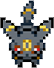

La fuite de Noctali
Cher Noctali, Tu as été capturé. Ta mission sera de t'échapper de la base secrète de la Team Rocket. Fais attention à ne pas te faire repérer.Retrouve ton dresseur à l'exterieur. Trouve le bon bouton pour débloquer la sortie. Attention, un seul permet d'ouvrir la sortie, les autres sont des pièges. Appuye sur Espace pour commencer à jouer. Et sur F5 pour recommencer. A toi d'jouer !